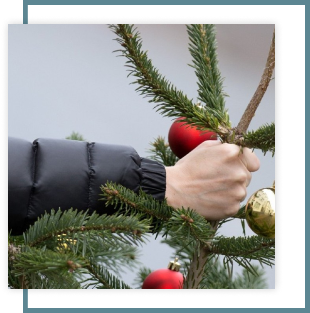

Что делать с новогодней елкой после праздников?
Вот-вот Новый Год настанет и мы с трепетом загадаем желание под бой курантов! И непременным атрибутом в каждом доме на постсоветском пространстве остается Новогодняя ель, и лучше натуральная, с зимним хвойным запахом! Всем, кто еще не успел приобрести зимнюю красавицу, и не хочет наряжать искусственные елки, посвящается этот сайт! Что же делать с елкой, которая будет украшать новогодние праздники?
выбрать услуги
